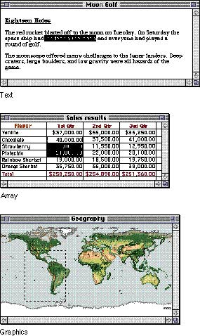

|
|
SelectingBefore performing an operation on an object, the user must select it, usually by clicking it, to distinguish it from other objects. Selecting the object to be operated on before identifying the operation itself is a fundamental characteristic of the Macintosh human interface. The pattern is usually something like this:
There is always a visual clue to show that something has been selected. For example, text and icons in a black-and-white environment usually appear in inverse video when selected. In color environments, icons appear darker and text is highlighted with the color the user set in the Color control panel. In some situations, other forms of highlighting may be more appropriate. The important thing is that there should always be immediate feedback, so the user knows that the click had an effect. |
|
|
Selecting an object never alters the object itself. Making
a selection shouldn't commit the user to anything; there
should never be a penalty for making an incorrect
selection. The user can undo any selection by making any
other selection or clicking outside the selection.
How something is selected depends on what it is. Although there are many ways to select objects, the selection methods fall into easily recognizable groups. Users get used to selecting objects in certain ways, and applications that use these methods are easier to learn. Some of these methods apply to every type of application, and some to only particular types of applications. |
|
It's useful to
distinguish among three types of objects--text, lists or
arrays, and graphics--because the user deals with each of
them in a different way when selecting them. Figure 10-14 shows an example of each.
Figure 10-14 Three ways of selecting information  Each of these three ways of presenting information retains its integrity regardless of the context in which it appears. For example, a field in an array can contain text. When the user is manipulating the field as a whole, the field is treated as part of the array. When the user wants to change the contents of the field, he or she edits the field in the same way as any other text. Text can be arranged on the screen in a variety of ways.
Some applications, such as word processors, might consist
of nothing but text, whereas others, such as
graphics-oriented applications, might use text almost
incidentally. Arrays are tabular arrangements of fields. One-dimensional arrays are called lists, and two-dimensional arrays are called forms or tables. Each field contains a collection of information, usually text and possibly graphics. A table can be easily identified on the screen as it consists of rows and columns of fields (sometimes called cells) separated by horizontal and vertical lines. (Tables are often implemented in spreadsheet applications.) A form is something the user fills out, such as a tax form or credit-card application. Although the fields in a form can be arranged in any appropriate way, your application always considers these fields as being in a well-defined linear order. Graphics are pictures, drawn either by the user or by the application. Graphics in a document tend to consist of discrete objects, each of which can be selected individually. The sections that follow discuss the general methods of
selecting and the specific methods that apply to text
applications, graphics applications, Subtopics |